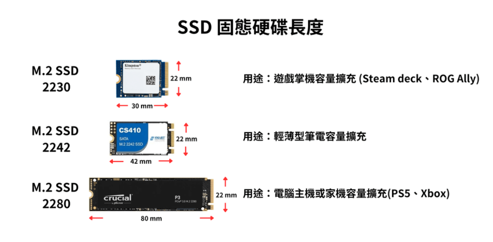

「明明換了宣傳寫著 7,500 MB/s 的 PCIe 4.0 旗艦 M.2 SSD，為什麼開機和進遊戲的速度，體感跟以前 550 MB/s 的 SATA SSD 差不多？」
「買了一顆 20Gbps 的 USB 3.2 Gen 2x2 隨身行動固態硬碟，插上最新款 MacBook 卻只能跑出 1,000 MB/s？」
「組裝 NAS 時貪便宜買了便宜的大容量硬碟，為什麼做 RAID 陣列重建時卡死、硬碟瘋狂掉盤？」
在現代電腦硬體體系中，儲存裝置（Storage Devices）往往是被最多「行銷數字煙幕彈」包裝的領域。廠商總愛在彩盒上印上動輒數千 MB/s 的連續傳輸（Sequential）頻寬，但在真實的工程開發、作業系統開機、資料庫運作與 3A 遊戲載入中，決定你體驗的往往是完全不同的物理機制。
本文將為你建立一套清晰、可驗證、深達物理與底層通訊協定的儲存硬體全景認知，並附上極致詳盡的規格效能對比大表與互動模擬器，徹底治癒你的儲存選型焦慮。
0. 觀念破壁：破解儲存名詞的「三維度混淆」
許多人在討論「M.2、SSD、SATA、NVMe」時會語無倫次，本質上是因為混淆了以下三個完全獨立的維度：
📐 1. 物理外觀尺寸 (Form Factor)
「它長什麼樣子、量體多大」：例如 3.5 吋、2.5 吋、M.2 (2280/2230/2242)、U.2、隨身隨身碟。這只代表外觀與螺絲孔位，不代表速度！
🔌 2. 實體匯流排介面 (Bus Interface)
「電氣訊號走哪條實體線路」：例如 SATA 3.0 (6Gbps)、PCIe (PCI Express Gen 3/4/5)、USB (USB 2.0 / 3.2 / USB4)、Thunderbolt。這決定了物理傳輸頻寬上限。
📜 3. 邏輯通訊協定 (Protocol / Layer)
「作業系統與主控晶片如何對話」：例如舊式的 IDE/ATA、為磁碟設計的 AHCI、專為快閃記憶體設計的 NVMe、以及 USB 上的 BOT 與 UASP。這決定了指令佇列深度與延遲表現。
💡 硬核速記法：
• M.2 不是速度代名詞！ 早期有 M.2 SATA SSD，速度跟 2.5 吋 SATA SSD 一模一樣只有 550 MB/s。
• NVMe 才是速度的靈魂！ 走 PCIe 通道的 M.2 NVMe SSD 才能跑出 3,500 ~ 14,000+ MB/s 的超狂頻寬。
• Type-C 只是接頭形狀！ 一條 Type-C 線可能只跑 USB 2.0 (480Mbps)，也可能跑 Thunderbolt 4 (40Gbps)。
1. 全世代規格與效能極速比較大表
以下橫跨傳統機械硬碟 (HDD)、2.5 吋 SATA 固態硬碟、主流與次世代 M.2 NVMe，以及各級 USB 外接儲存，進行全方位實測與技術指標大對決：
| 裝置類型 | 實體介面 / Form | 通訊協定 | 理論頻寬上限 | 實測循序讀/寫 (MB/s) | 4K 隨機讀/寫 (IOPS) | 存取延遲 (Latency) | 功耗與發熱 | 抗震能力 | 每 GB 成本 | 最佳核心定位 |
|---|---|---|---|---|---|---|---|---|---|---|
| 3.5" 機械硬碟 (7200 RPM) | SATA III 6Gbps (3.5") | ATA / AHCI | 600 MB/s | 180 ~ 270 | 75 ~ 150 | 10 ~ 15 ms (極高) | 6 ~ 10 W (溫溫的) | ❌ 脆弱 (怕摔震) | 極低 (~$0.015/GB) | NAS 儲存池、冷備份、監控錄影 |
| 2.5" 機械硬碟 (5400 RPM) | SATA III 6Gbps (2.5") | ATA / AHCI | 600 MB/s | 90 ~ 140 | 50 ~ 100 | 15 ~ 20 ms (極高) | 2 ~ 4 W (低) | ❌ 脆弱 (怕摔震) | 低 (~$0.03/GB) | 舊式外接硬碟、老筆電替換 |
| 2.5" SATA SSD | SATA III 6Gbps (2.5") | AHCI (Queue 32) | 600 MB/s | 540 / 520 | 50K ~ 95K | 50 ~ 100 μs | 2 ~ 4 W (涼爽) | ✅ 優異 (純晶片) | 中低 (~$0.06/GB) | 舊機升級、靜音倉庫、平價擴充 |
| M.2 SATA SSD | M.2 B+M Key (2280) | AHCI (Queue 32) | 600 MB/s | 540 / 520 | 50K ~ 90K | 50 ~ 100 μs | 2 ~ 3 W (涼爽) | ✅ 優異 | 中低 (漸被淘汰) | 舊款輕薄筆電專用 |
| M.2 PCIe 3.0 NVMe | M.2 M-Key (2280) | NVMe 1.3/1.4 | 3.94 GB/s | 3,500 / 3,000 | 350K ~ 600K | 20 ~ 30 μs | 3 ~ 6 W (微溫) | ✅ 優異 | CP值甜點 (~$0.065/GB) | 主流辦公、平價遊戲碟、省電筆電 |
| M.2 PCIe 4.0 NVMe | M.2 M-Key (2280) | NVMe 1.4/2.0 | 7.88 GB/s | 7,450 / 6,900 | 800K ~ 1,400K | 12 ~ 20 μs | 5 ~ 9 W (需金屬散熱片) | ✅ 優異 | 主流標準 (~$0.08/GB) | 當前最佳系統開機碟、PS5 擴充、3A 遊戲 |
| M.2 PCIe 5.0 NVMe | M.2 M-Key (2280) | NVMe 2.0 | 15.75 GB/s | 14,500 / 12,000 | 1.5M ~ 2.4M | 8 ~ 15 μs | 10 ~ 14 W (高熱！需主動風扇) | ✅ 優異 | 極高 (~$0.18/GB) | 極限發燒友、8K RAW 影片即時渲染 |
| 平價 USB 2.0 隨身碟 | USB Type-A | BOT (單向阻塞) | 480 Mbps | 25 ~ 35 / 8 ~ 15 | 50 ~ 200 | 10 ~ 50 ms | 0.5 ~ 1 W (冰涼) | ✅ 優異 | 超低 (但極慢) | 印表機插孔、一次性文件傳送 |
| USB 3.2 Gen 1 隨身碟 | USB Type-A / Type-C | BOT / UASP (少數) | 5 Gbps | 120 ~ 250 / 30 ~ 80 | 200 ~ 1,000 | 5 ~ 15 ms | 1 ~ 2 W | ✅ 優異 | 平價 | 系統安裝隨身碟 (PE/Ubuntu)、暫存 |
| USB 3.2 Gen 2 行動固態 (PSSD) | USB Type-C | NVMe + UASP | 10 Gbps | 1,050 / 1,000 | 30K ~ 60K | 80 ~ 150 μs | 3 ~ 5 W (金屬外殼微溫) | ✅ 優異 | 中 (~$0.10/GB) | 跨平台工作交換、剪輯外錄 (ProRes) |
| USB4 / Thunderbolt 4 外接 SSD | USB Type-C (40Gbps) | PCIe Tunnel + NVMe | 40 Gbps | 3,100 / 2,800 | 250K ~ 500K | 30 ~ 50 μs | 5 ~ 8 W (需鋁合金散熱) | ✅ 優異 | 較高 (~$0.15/GB) | Mac 外接系統碟、專業 4K/8K 雙向剪輯 |
2. HDD 機械硬碟：每 GB 成本霸主與致命的 SMR 深坑
雖然在消費級電腦上，HDD 幾乎已經被徹底驅逐出「開機碟」與「遊戲碟」的範疇，但在資料中心、NAS (網路附加儲存) 與監控安防領域，機械硬碟依然牢牢統治著全世界 80% 以上的資料儲存總量。原因很簡單：容量大、每 GB 成本便宜到快閃記憶體望塵莫及。
2.1 物理讀寫機制：為什麼 HDD 隨機讀寫爛到只有 0.5 MB/s？
HDD 內部是由旋轉的鋁合金或玻璃磁盤（Platters）與機械臂（Actuator Arm）組成：
- 循序讀寫 (Sequential)：當讀寫大檔案時，磁頭只要維持在同一個磁軌上，隨著磁盤旋轉（5400/7200 RPM），就能一口氣讀取大量資料。現代 3.5 吋高密度硬碟的內圈循序讀寫約 150 MB/s，外圈甚至可達 260 ~ 280 MB/s。
- 4K 隨機讀寫 (Random)：當要讀取分散在硬碟各處的微小檔案時，機械臂必須進行物理尋道 (Seek Time，約 4~9ms)，磁盤還必須轉到對應扇區（旋轉延遲 Rotational Latency，7200RPM 約需 4.16ms）。這使得硬碟一次 4K 隨機尋址總耗時高達 10 ~ 15 毫秒 (ms)！換算成 IOPS（每秒輸入輸出操作次數）： $$IOPS = \frac{1000\text{ ms}}{\text{平均尋道延遲 (10ms)}} \approx 75 \sim 100 \text{ IOPS}$$ $100 \times 4\text{KB} = 0.4 \text{ MB/s}$！這就是為什麼用機械硬碟跑 Windows 10/11 會瘋狂卡在「硬碟 100%」，任何零碎的系統背景日誌更新都會讓機械硬碟徹底癱瘓。
2.2 CMR (PMR) vs SMR：NAS 與資料安全的「世紀大坑」
✅ CMR (Conventional Magnetic Recording) 傳統磁記錄
磁軌與磁軌之間保留足夠的安全保護間隔。寫入一個磁軌完全不會干擾相鄰磁軌。隨機寫入性能穩定，NAS 陣列重建（Rebuild）迅速且可靠。選購硬碟請指名 CMR（如 WD Red Plus/Pro、Seagate IronWolf/Exos、Toshiba N300/MG 系列）。
⚠️ SMR (Shingled Magnetic Recording) 疊瓦式磁記錄
為了在相同面積多塞 25% 容量，把磁軌像屋頂瓦片一樣重疊排列。寫入磁頭比讀取磁頭寬，一旦要修改中間某一條磁軌，整組疊瓦區塊全部要讀出、修改、重寫！造成極端嚴重的「寫入放大」。NAS 混入 SMR 碟，陣列重建時寫入速度會崩跌至幾百 KB/s，導致重建耗時數天甚至陣列直接崩潰！
3. 2.5 吋 SATA SSD：老機救星與 AHCI 的歷史天花板
固態硬碟（SSD）消除了所有機械運動部件，依靠 NAND Flash 快閃記憶體晶片與主控晶片以電子方式定址，延遲直接從機械硬碟的 10ms 暴降至 0.05ms (50μs)，整整快了 200 倍！這就是為什麼老電腦從 HDD 換成任何一顆平價 SATA SSD，日常流暢度會有「換了新電腦」般的質變。
3.1 SATA III 與 AHCI 的「物理枷鎖」
很多初學者問：「為什麼市場上幾百種 2.5 吋 SATA SSD，不管是三星、美光還是金士頓，標示的最高速度永遠都是 550 MB/s 讀取、520 MB/s 寫入？」
答案在於 SATA 傳輸介面的規格極限：
- SATA 3.0 介面時脈：6.0 Gbps。
- 8b/10b 實體層線路編碼：每傳輸 8 位元有效數據，就需要 10 位元的實體信號，損耗高達 20%。 $$實體有效頻寬 = 6.0 \text{ Gbps} \times \frac{8}{10} = 4.8 \text{ Gbps} = 600 \text{ MB/s}$$
- 協定開銷 (Overhead)：扣除 SATA 訊框頭、校驗碼與檔案系統開銷，實質資料吞吐量最高就死死卡在 550 ~ 560 MB/s。
- AHCI 協定瓶頸：AHCI（進階主機控制器介面）早在 2004 年由 Intel 主導制定，本質是為了給高延遲的旋轉機械硬碟優化指令排列（NCQ Native Command Queuing）。它只有單一指令佇列（Single Queue），佇列深度最多只有 32 條指令。面對現代並行度極高的多核心 CPU 與快閃記憶體陣列，AHCI 早就成了嚴重的交通堵塞瓶頸。
4. M.2 世代革命：PCIe 3.0、4.0 到 5.0 與 NVMe 協定解放
為了打破 SATA 與 AHCI 的雙重枷鎖，工程界誕生了 M.2 介面 與 NVMe (Non-Volatile Memory Express) 傳輸協定。
4.1 NVMe 協定為什麼這麼快？
NVMe 捨棄了轉接南橋 SATA 控制器的迂迴路線，直接讓 SSD 透過 PCIe 匯流排直通 CPU：
- 64,000 佇列深度：從 AHCI 的「1 個佇列、深度 32」，一舉提升到「最多 64,000 個獨立佇列，每個佇列可容納 64,000 個指令」！這意味著現代多核心 CPU（如 16 核 32 緒）的每一個核心都能擁有專屬的佇列，徹底消除佇列鎖定競爭。
- 指令延遲腰斬：每條命令從 100 條暫存器暫態開銷減少至幾條輕量指令，CPU 輪詢與中斷延遲縮小到 10 微秒（μs）級別。
4.2 PCIe 世代頻寬翻倍演進（以主流 x4 通道為例）
| PCIe 世代 | 通道編碼 (Encoding) | 單通道頻寬 (x1) | 主流 SSD 通道 (x4) 理論極限 | 實測最高循序讀寫 | 典型功耗與代表性產品 |
|---|---|---|---|---|---|
| PCIe 3.0 | 128b/130b (損耗僅 1.5%) | 985 MB/s | 3.94 GB/s | ~3,500 MB/s | 3~5W (無散熱片也安全) / 三星 970 EVO Plus、海力士 P31 |
| PCIe 4.0 | 128b/130b | 1.97 GB/s | 7.88 GB/s | ~7,450 MB/s | 6~9W (建議金屬散熱片) / 三星 990 Pro、WD SN850X、美光 T500 |
| PCIe 5.0 | 128b/130b | 3.94 GB/s | 15.75 GB/s | ~14,500 MB/s | 11~14W (需超厚重散熱片或微型風扇) / 美光 Crucial T705 |
4.3 為什麼 7,500 MB/s 的 Gen4 跟 14,000 MB/s 的 Gen5 日常體感無感？
這是一個非常經典的硬體盲區：「循序讀寫 (Sequential)」只在傳輸極大單一連續檔案時發揮作用（例如拷貝單檔 100GB 4K 藍光影片）。但在系統開機、開啟 Photoshop、載入遊戲時，電腦讀取的是成千上萬個數 KB 到數十 KB 的零碎組態檔與程式庫。
這時決定流暢度的是 4K 隨機讀取 (單佇列 QD1 延遲)：
- 7200 RPM 機械硬碟的 4K QD1 讀取：約 0.6 MB/s
- SATA SSD 的 4K QD1 讀取：約 35 ~ 45 MB/s（提升 70 倍，體感震撼！）
- PCIe 3.0 NVMe SSD 的 4K QD1 讀取：約 55 ~ 65 MB/s
- PCIe 4.0 NVMe 旗艦的 4K QD1 讀取：約 80 ~ 95 MB/s
- PCIe 5.0 NVMe 頂級旗艦的 4K QD1 讀取：約 95 ~ 110 MB/s
看到了嗎？從 SATA 到 PCIe 4.0，循序速度從 500 飆到 7,000（飆了 14 倍），但真實決定體感的 4K 單佇列速度只從 40 提高到 85（只差 2 倍左右）。從 Gen4 換到 Gen5，4K QD1 更是只提升了 15% 左右，但價格與發熱量卻翻倍！這就是「日常體驗邊際效益遞減」的核心物理真相。
4.4 M.2 物理外觀尺寸 (Form Factors) 與長度規格全解析：2230 / 2242 / 2280 / 22110
除了上述的 PCIe 傳輸通道與 NVMe 協定世代之外，在實際選購、自行更換或升級遊戲掌機、輕薄筆電、PS5 家用主機或桌上型電腦時，另一個讓無數玩家與工程師容易買錯的關鍵硬體參數就是「M.2 SSD 的物理長度與尺寸規格 (Form Factor)」。

▲ M.2 SSD 固態硬碟常見長度規格與典型應用：2230 (掌機)、2242 (輕薄筆電) 與 2280 (桌機與家機)
📐 1. 命名數字的幾何密碼 (Naming Convention)
M.2 規格代號如 2230、2242、2280 並不是隨機命名的型號，而是直接反映 PCB 印刷電路板的「寬度」與「長度」（單位：毫米 mm）：
- 前兩位數字 (22)：代表 PCB 的寬度為 22 mm。目前消費級市場上絕大多數 M.2 固態硬碟的寬度均標準化為 22 mm（罕見特殊工控規格有 16mm 或 30mm）。
- 後兩位（或三位）數字：代表 PCB 的長度 (Length)：
30= 長度 30 mm42= 長度 42 mm60= 長度 60 mm（較為罕見，早期部分 OEM 筆電使用，現已邊緣化）80= 長度 80 mm（全球市場絕對主力與出貨量冠軍）110= 長度 110 mm（多見於企業級伺服器與資料中心）
🎮 2. 主流 M.2 尺寸規格深度剖析與應用場景
🕹️ M.2 2230 (22 mm × 30 mm)
【核心用途】：遊戲掌機容量擴充 (Steam Deck、ROG Ally、Legion Go)
硬體特性與工程極限：
- 極致微型化：PCB 表面積僅 660 mm²，是所有 M.2 SSD 中最小巧的規格。
- DRAM-less + HMB 主流：因為空間極度有限，無法容納獨立的實體 DRAM 快取晶片，主要依賴 HMB (Host Memory Buffer) 技術借用主機 64MB 系統記憶體存放快閃記憶體對映表 (FTL)。
- 顆粒密度與容量：多數僅能焊接 1 顆 3D NAND 晶片，主流容量為 512GB、1TB，少數採用極致堆疊或 QLC 技術達到 2TB。
- ⚠️ 掌機升級避坑要點：務必選購「單面顆粒 (Single-sided)」！Steam Deck 與 ROG Ally 內部的屏蔽罩與主機板間隙只有零點幾公釐，若買成背面焊有元件的雙面顆粒 SSD，硬鎖會造成 PCB 彎曲形變，壓迫主機板供電電路造成短路損毀。
💻 M.2 2242 (22 mm × 42 mm)
【核心用途】：輕薄型筆電容量擴充 (Ultrabook、ThinkPad、Mini PC)
硬體特性與工程極限：
- 空間折衷產物：長度比 2230 多出 12 mm，為輕薄型商務筆電（如 Lenovo ThinkPad 系列的 WWAN/LTE 擴充槽、微軟早期 Surface）或迷你電腦 (Mini PC) 設計。
- 零組件餘裕：部分 2242 產品具備充裕空間容納 2 顆快閃記憶體晶片或小容量獨立緩存。
- 市場選型限制：零售消費市場的現貨選型遠少於 2280，每 GB 單價略高。常有玩家利用「2230 轉 2242 延長支架」直接將 2230 轉接安裝在 2242 插槽中。
🖥️ M.2 2280 (22 mm × 80 mm)
【核心用途】：電腦桌機主機板、電競筆電、家用遊戲機 (Sony PS5)
硬體特性與工程極限：
- 黃金工業標準：全球消費市場佔有率超過 90% 的絕對標準，擁有最完整的供應鏈競爭與最便宜的每 GB 價格。
- 旗艦架構滿血配置：80 mm 的長度能完美佈局：
① 高速 8 通道頂級主控晶片（支援 PCIe 4.0 / 5.0，如 Phison E26/E18、Samsung Elpis/Pascal）；
② 獨立實體 LPDDR4/DDR4 DRAM 高速緩存（提供 1GB:1TB 的快顯記憶體黃金比例，4K 隨機寫入性能大幅提升且不掉速）；
③ 多達 2~4 顆大容量快閃記憶體顆粒，單條輕鬆達成 2TB、4TB 乃至 8TB 海量容量。 - 成熟散熱生態：主機板原廠皆標配厚重的金屬散熱鎧甲或熱導管，亦相容各類第三方改裝散熱器。
🏢 M.2 22110 (22 mm × 110 mm)
【核心用途】：企業級伺服器、雲端運算節點、企業資料中心 (Data Center)
硬體特性與工程極限：
- 企業級專屬加長型：比常規 2280 長出整整 30 mm，通常一般家用主機板無法容納（少數高階工作站主機板會提供 22110 鎖孔）。
- PLP 掉電保護電容陣列 (Power Loss Protection)：多出的空間並非單純塞更多記憶體，而是焊接整排固態鉭質電容。當機房電力異常中斷時，電容瞬間放電支撐 30~50 毫秒，促使主控將 DRAM 緩存中未落盤的交易紀錄安全 Flush 至 NAND，避免資料庫結構損毀。
🔌 3. M.2 防呆缺口金手指 (Keying)：千萬別買錯插槽協定！
除了長度之外，M.2 的金手指缺口（稱為 Key）直接決定了電氣特性相容性：
| 金手指缺口類型 | 物理缺口針腳位置 | 支援匯流排與傳輸協定 | 外觀特徵與識別避坑 |
|---|---|---|---|
| M Key (主流旗艦) | 缺口位於第 59 到 66 腳位（右側缺口） | PCIe x4 (Gen3/4/5) / SATA | 所有高速 NVMe SSD 的標準缺口。只能插在主機板的 M-Key 插槽上，能跑滿完整 PCIe 4 通道頻寬。 |
| B Key (少見/網卡) | 缺口位於第 12 到 19 腳位（左側缺口） | PCIe x2 / SATA / USB / SMBus | 早期平價 SSD 或 4G/5G LTE 數據通訊模組。最高僅支援 PCIe 2 通道。 |
| B + M Key (雙缺口) | 同時具備 B Key 與 M Key 兩個缺口 | SATA 協定 / PCIe x2 | 重大避坑點！ 市面上的 B+M Key 固態硬碟90% 以上是骨子裡走 SATA 協定的舊規格（速度極限僅 550 MB/s）。許多新款主機板 M.2 插槽已取消 SATA 線路，插上去會完全讀不到硬碟！ |
🛠️ 4. 家用主機 (PS5) 與遊戲掌機改裝實戰規格指南
| 升級擴充裝置 | 官方指定 / 最佳 M.2 規格 | 推薦循序讀取速率 | 散熱尺寸與厚度物理硬性限制 | 市售熱門推薦選型 |
|---|---|---|---|---|
| Sony PlayStation 5 (PS5 / PS5 Pro) | M.2 2280 PCIe 4.0 x4 NVMe (亦相容 2230/2242/2260/22110) |
≥ 5,500 MB/s (推薦 7,000+ MB/s) | 含散熱片總厚度 ≤ 11.25 mm （散熱片本體頂部不能超過 8.0 mm，底部不能超過 2.45 mm，否則金屬艙蓋無法閉合） |
三星 990 Pro 含散熱片版、WD Black SN850X、美光 Crucial T500、KIOXIA Exceria Pro |
| Valve Steam Deck (LCD / OLED) | M.2 2230 PCIe 3.0/4.0 x4 NVMe | ≥ 3,500 MB/s (受限於掌機主控，Gen3/Gen4 均可) | 嚴禁雙面顆粒！ 必須為單面佈線 (Single-Sided)，需套回原廠金屬抗干擾遮蔽金屬套管。建議挑選低功耗主控以延長掌機續航。 |
WD SN770M 2230、美光 Crucial P310 2230、Corsair MP600 Mini、KIOXIA BG5 |
| ASUS ROG Ally / Ally X | ROG Ally: M.2 2230 ROG Ally X: 原生支援 M.2 2280 |
≥ 5,000 MB/s (原生支援 PCIe 4.0 x4) | ROG Ally 舊款僅限 2230；Ally X 則已加大機身改為標準 2280 槽。注意風道不得被過厚副廠散熱片干涉。 | ROG Ally: WD SN770M / Sabrent Rocket 2230 Ally X: 三星 990 Pro / WD SN850X 2280 |
5. USB 儲存裝置：隨身碟與外接 PSSD 的協定暗坑
很多使用者發現：明明買了號稱 USB 3.2 100MB/s 讀取 的平價隨身碟，剛開始拷貝檔案很快，但傳了幾秒鐘後，寫入速度直接跳崖暴跌到 5 MB/s 甚至 0 KB/s，比 20 年前的 USB 2.0 還慢！為什麼？
5.1 隨身碟掉速真相：黑片顆粒與 SLC 快取耗盡
現代快閃記憶體主要有以下四種類型：
- SLC (1 bit/cell)：速度極快、壽命 100,000 次擦寫，但成本極高。
- TLC (3 bit/cell)：現代主流 SSD 核心，壽命約 1,000~3,000 次。
- QLC (4 bit/cell)：便宜隨身碟最愛，壽命僅 100~300 次，且真實原始寫入速度（裸寫速度）只有慘不忍睹的 8 ~ 30 MB/s。
為了做出漂亮的宣傳跑分，廉價隨身碟與低階 SSD 會劃分一小塊容量作為 SLC Cache（模擬 SLC 快取）。當你傳入前 5GB 資料時，主控用 SLC 模式高速寫入，速度可達 200 MB/s；但一旦這 5GB 緩存爆滿，主控必須一邊將舊資料搬移壓縮回 QLC 區塊，一邊接收新資料，速度瞬間發生「斷崖式坍塌」，直接跌落到 5~10 MB/s 並產生嚴重卡頓。
5.2 BOT 傳輸 vs UASP 傳輸協定
外接儲存的另一個分水嶺在於通訊傳輸協定：
🔴 BOT (Bulk-Only Transport)
1999 年隨 USB 1.1 誕生。單向半雙工、單指令阻塞式通訊。發送一個寫入指令後，主機端必須乾等儲存裝置回傳完成訊號，才能發送下一個指令。遇到零碎檔案時效率奇差，隨機讀寫完全崩潰。
🟢 UASP (USB Attached SCSI Protocol)
隨 USB 3.0 制定。將 SCSI 架構命令佇列引入 USB 傳輸，支援最多 32 個命令佇列與全雙工同時收發。配合行動固態硬碟（PSSD）可減少 80% 傳輸延遲，小檔讀寫效率暴增 4~6 倍！
5.3 外接 PSSD 的 20Gbps 尷尬與 Mac 的相容地雷
市面上標註 USB 3.2 Gen 2x2 (20Gbps, ~2,000 MB/s) 的行動硬碟（例如金士頓 XS2000、SanDisk Extreme PRO 20G）：
- Apple Mac 痛點：所有配備 M1/M2/M3/M4 晶片的 Mac 電腦，其 Type-C 介面支援 USB 3.2 Gen 2 (10Gbps)、USB4 (40Gbps) 與 Thunderbolt 3/4，但硬體上完全不支援 USB 3.2 Gen 2x2 雙通道協議！
- 當你把 20Gbps 的硬碟插上 Mac，它只能協商回單通道模式，降速至 10Gbps（實測約 1,000 MB/s）。
- 解方：Mac 用戶若追求 2,500 ~ 3,000 MB/s 以上的真極速外接傳輸，必須購買支援 USB4 或 Thunderbolt 3/4 (40Gbps) 的外接盒或 PSSD（如配備 ASMedia ASM2464PD 或 Intel JHL7440 主控晶片）。
6. 互動工具：全儲存裝置傳輸耗時與吞吐量模擬器
透過下方實戰模擬器，親自體驗不同情境下，從傳統機械硬碟到 PCIe 5.0 與 USB4 的巨大傳輸差距：
7. 工程師終極選購與配置決策矩陣
綜合所有規格、傳輸協定、發熱量、可靠性與預算，以下是各類電腦情境的最佳搭配指南：
8. 結語：回歸真實需求，遠離數字陷阱
在儲存的世界裡，「最昂貴」永遠不等於「最適合」。PCIe 5.0 高達 14,000 MB/s 的頻寬令人血脈賁張，但換來的是 80°C 的高溫與吵雜的微型風扇；廉價隨身碟標榜 200MB/s 傳輸，卻可能在拷貝大檔案時因 QLC 掉速而讓你痛不欲生。
理解硬體結構的真實物理邊界：在需要海量吞吐與低延遲的地方交給 M.2 PCIe 4.0 NVMe；在需要穩固長遠儲存的地方信賴 3.5" CMR HDD；在行動生產力領域善用 10Gbps/40Gbps UASP 外接 PSSD。看懂規格表背後的邏輯，你就是掌控資料流速的硬核工程師！